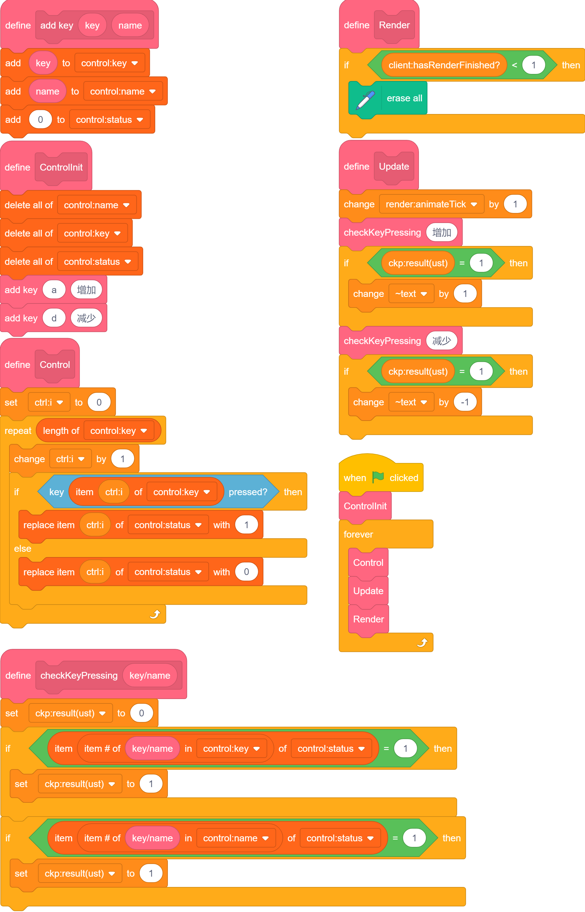

Input Gathering
sc本身的输入功能非常鸡肋，只能检测是否按下某个键。
至少做到鼠标侦测（当角色被点击）那样吧。
需要说明的是，我们主要以URM作为底层。
键盘侦测
为了便捷地动态增减要侦测的按键，我们要用列表把它们存起来。
包装按键
我们可以简单设想一下我们要实现的：检测点击、抬起和长按。
让我们先把对于每种按键都要进行一遍的如果<()按下>...否则...化简一下。
我讲下想法，免得这步有些跳跃。
首先，用列表存储要侦测的按键种类，并将按键命名，以方便游戏中自定义按键。
然后，在每次更新时调用按键侦测。
具体如下：

点此测试
由于数显的存在与否无关紧要，我们目前的渲染直接使用原生sc的变量。
点击和取消点击
注意到上述仅仅一个 status 作为结果来处理略显不足，因我们不能让上层部分覆盖下层部分的读入。
所以我们要新增一个列表 result。
此时，我们可以用 status 表示按键是否按下，而 result 可以表示是否在这一刻进行了变化以及变成了什么。
挺简单的，直接写了：
点此测试
长按
我们简单想一下就知道，长按跟点击要分开。
但是当你对比一下仅有点击和仅有长按的逻辑，就会发现 status的部分是相同的：
所以我们直接合并即可。
也简单写了：
点此测试
鼠标侦测
仿照键盘部分即可，但是判定方式略有改变。
目前先将键盘部分内容拷贝过来并进行了少量修改。如图。